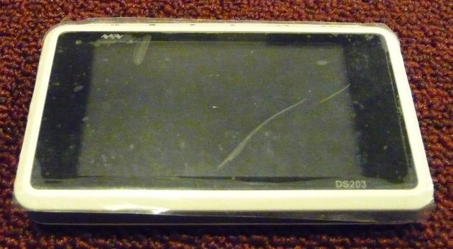
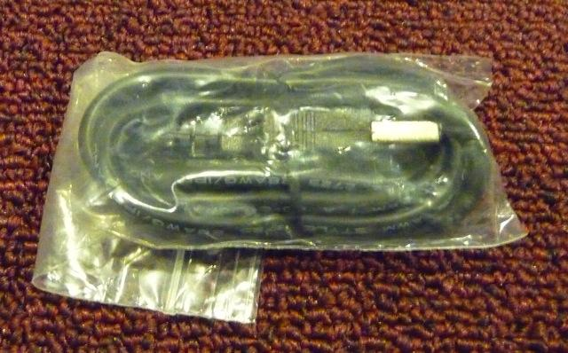
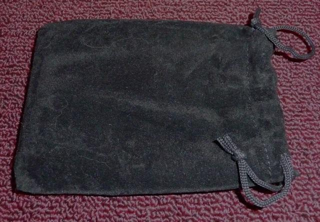
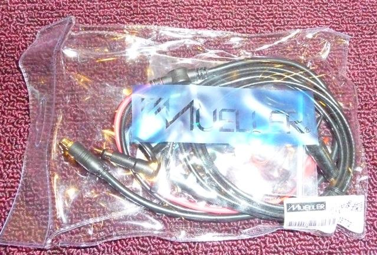
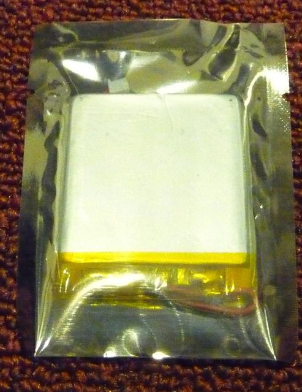

The DSO Quad is a pocket oscilloscope. It has lots of great features in a small package:
If this is your first time using the DSO Quad, please read the Getting Started section.
The Specifications section has all the details about the DSO Quad's capabilities.
> Download this manual as a PDF <
Note: The DSO Quad is currently a BETA product. This means significant hardware and software issues still exist in the product. Every attempt has been made to accurately describe the current product in this manual. However, this manual comes with ABSOLUTELY NO WARRANTY.
Seeedstudio's official manual can be downloaded here. I started this page as a project in my spare time to answer all the questions I had when I first got my DSO Quad.
This manual may help if you're wondering:
I felt like this all belongs in one place -- a manual -- and I just kept working on it until it is what you see now. - Tgo
When you receive the DSO Quad, you should have something like this:
     (This is the Lithium-Polymer battery, still in its static bag)
The DSO Quad is charged by connecting the USB cable. The LTC4054 battery controller will not charge the battery while the power switch is on. This is best explained in a table:
| Power Switch | USB Cable | Battery | What you see | DSO Quad Power Mode |
|---|---|---|---|---|
| OFF | Disconnected | Idle | LEDs off, display off | Powered off |
| ON | Disconnected | Draining | LEDs off, display on | Normal (power on) |
| ON | Disconnected | Draining | Green LED on, display off | Power save mode: after 600 seconds of no button presses, the screen is blanked |
| ON | Disconnected | Empty | LEDs off, display off | No battery, power off. Please connect the USB cable: battery needs to be charged |
| ON | Connected to 5V/500mA USB | Idle | Red LED on, display on | Powered on, battery will not charge while on |
| OFF | Connected to 5V/500mA USB | Charging | Red LED on, display off | Powered off, battery charging |
| OFF | USB port is not supplying power* | Idle | LEDs off, display off | Powered off, unable to charge |
| OFF | Connected to 5V/500mA USB | Full | LEDs off, display off | Powered off, battery is full |
| OFF | Connected to 5V/500mA USB | No battery installed | Red LED on dimly, display off | Powered off, no battery installed |
* USB port is not supplying power: if your DSO quad is not charging, it may be the USB port. Here are some troubleshooting tips:
There are several versions of the DSO Quad, and the firmware for each is different. Please carefully identify your hardware. When you first turn on the DSO Quad, look for the hardware version. Compare what you see to the following table:
Check here for the latest firmware: DSO_Quad:Upgrading_Firmware#Firmware_List
| Boot Screen | Hardware Ver | Factory FW | Latest FW Update | Notes |
|---|---|---|---|---|
| 2.7 | APP 2.53
SYS 1.52 FPGA 2.61 |
APP P1.00
SYS B1.52 FPGA 2.61 |
Seeed Studio ships this version.
This firmware has a much better GUI! (Also, the factory firmware on 2.7 freezed a lot, so this firmware is highly recommended) | |
| 2.6 | APP 2.33
SYS 1.33 FPGA 2.5 |
APP 2.53
SYS 1.52 FPGA 2.61 |
Seeed Studio shipped this version | |
| 2.2 | APP
SYS 1.02 |
APP 2.34? | Ver 2.2 devices were only given to Beta testers, with a free upgrade to 2.6. This version will not receive any further software updates. |
You might find more info on http://www.seeedstudio.com/forum/viewtopic.php?f=22&t=1929.
The firmware source code is available here. Note: Seeedstudio does not recommend you create your own FPGA firmware, because of the risk of damaging the hardware.
The DSO Quad requires calibration before the first use, and should be re-calibrated after extended use. The two parameters to be calibrated are gain and bias (DC offset).
(i'm not sure whats going on with the version numbering, perhaps its a beta or preview, but its not clear to me)
More details see here: DSO Quad:Calibration
Note: I noticed the calibration is different when you connect or disconnect a powersupply to the micro USB connection. So calibrate it the way you will use it the most.
The most important switches are the two rotating switches on the right. The right-most is the "navigation" switch for changing which main part of the UI is currently blinking. The other switch is the "submenu" switch used to change Volts/div, microseconds, trigger positions, etc.
Each of these switches can be rotated left or right, and clicked in like a push button.
The main screen has these blocks:
| Title | Description of block |
|---|---|
| RUN/HOLD | Pausing the scope, and start running again |
| CH(A) | cyan colored plot and measurements |
| CH(B) | yellow colored plot and measurements |
| CH(C) | purple colored plot and measurements |
| CH(D) | green colored plot and measurements |
| SCAN | brown colored SCAN/AUTO/NORM (NORMAL)/SINGL (SINGLE)/NONE trigger mode |
| Signal Generator | blue colored digital and analog "wave out" |
| Trigger | All trigger levels (for CH(A) through CH(D)) and the triggering mode |
| YPOS | YPOS |
| V1 | V1 |
| V2 | V2 |
| Horizontal scroller | Horizontal scroller |
| T1 | T1 |
| T2 | T2 |
| XPOS | XPOS |
| Delta V | difference between V1 and V2 markers |
| Delta T | difference between T1 and T2 markers |
| live measurements | customizable measurement read-outs. For example, Vbt, FPS, Vdc, RMS, Max, Min, Vpp, FRQ, DUT, CIR, TL, TH |
Vmax, Vmin, Vpp, Vdc (average V), Vrms (sqrt(average(V*V)))
Sampling 0.1 usec - 1 sec
Digital input bandwidth This forum thread
| Vpp | Volts peak-to-peak |
|---|---|
| x1 probe | Measures low voltage signals. Do not exceed 80Vpp or you may damage your DSO Quad. (Can be used as a low impedance probe.) |
| x10 probe | Measures high voltage signals. Do not exceed 400Vpp or you may damage your DSO Quad. (Can be used as a high impedance probe.)
Note that the values on screen are 1/10 of the input, so please multiply by 10 in your head. |
| ... | ... |
The DSO Quad can be charged from any normal USB port. Please charge your DSO Quad for at least 1 hour before using it.
The DSO Quad firmware does a rapid USB disconnect-reconnect to do a "live" firmware update. This method is incompatible with Mac OS X or Linux. Please see this forum thread for more information. See DSO_Quad:Upgrading_Firmware#Linux for how to upgrade firmware from Linux.
This document is Copyright © 2011, licensed under the CC-BY-SA 3.0 License.
Copyright (c) 2008-2016 Seeed Development Limited (www.seeedstudio.com / www.seeed.cc)